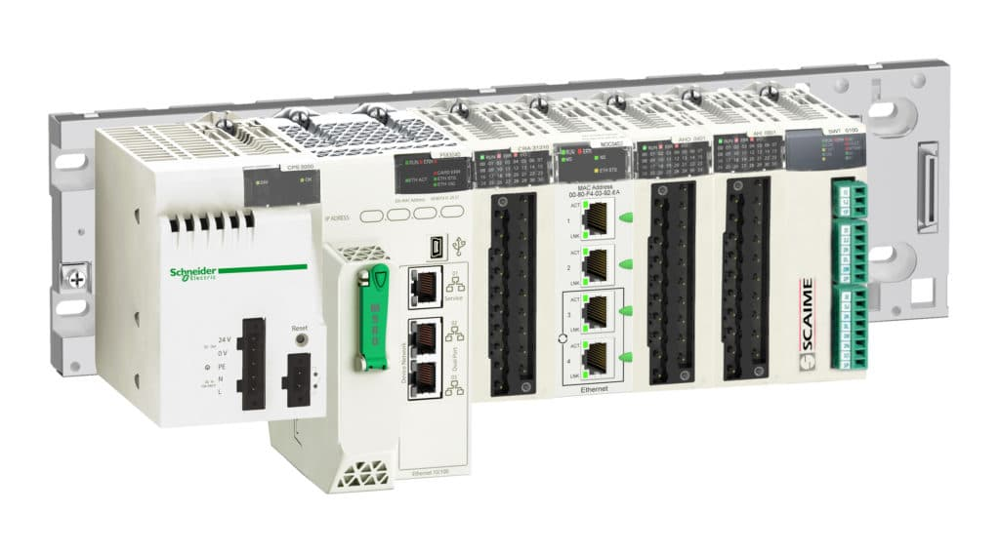
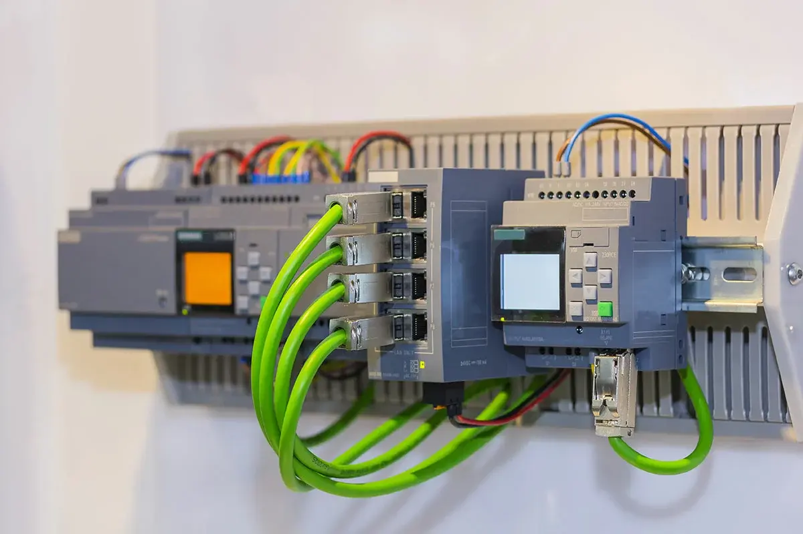
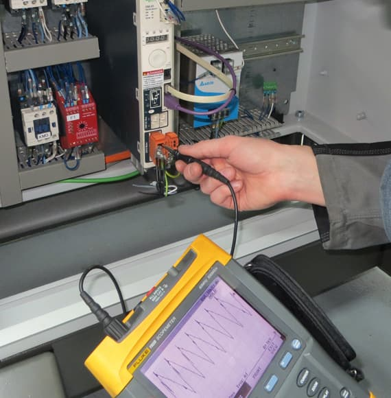
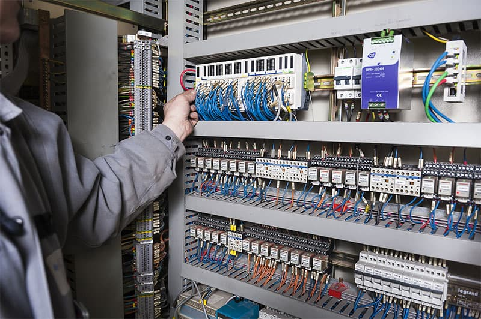

Pôle 03 · Automatisme
Solutions d'automatisme
Optimisez vos processus industriels avec nos solutions d'automatisation intelligentes et connectées.
Automatisation intelligente
Performance optimisée
Process connectés
01 — Étude
Étude
Notre équipe analyse vos processus pour proposer les meilleures solutions d'automatisation :
- Analyse des processus existants
- Identification des points d'amélioration
- Étude de faisabilité
- Optimisation des flux de production

02 — Conception
Conception
Nous concevons des systèmes automatisés adaptés à vos besoins :
- Architecture des systèmes
- Choix des composants
- Conception des interfaces
- Plans d'implantation
03 — Programmation
Programmation
Développement de programmes adaptés à vos équipements :
- Programmation d'automates
- Interfaces homme-machine
- Supervision SCADA
- Communication industrielle


04 — Production
Production
Mise en œuvre des solutions d'automatisation :
- Assemblage des systèmes
- Intégration des composants
- Tests unitaires
- Validation des fonctionnalités
05 — Contrôle qualité
Contrôle qualité
Validation complète des systèmes automatisés :
- Tests fonctionnels
- Validation des sécurités
- Contrôle des performances
- Documentation technique


06 — Installation
Installation et mise en service
Déploiement et configuration sur site :
- Installation des équipements
- Paramétrage des systèmes
- Formation des opérateurs
- Support technique
Envie d'automatiser votre production ?
De l'analyse de vos process à la formation de vos équipes, ERPAC déploie des systèmes automatisés fiables et durables.